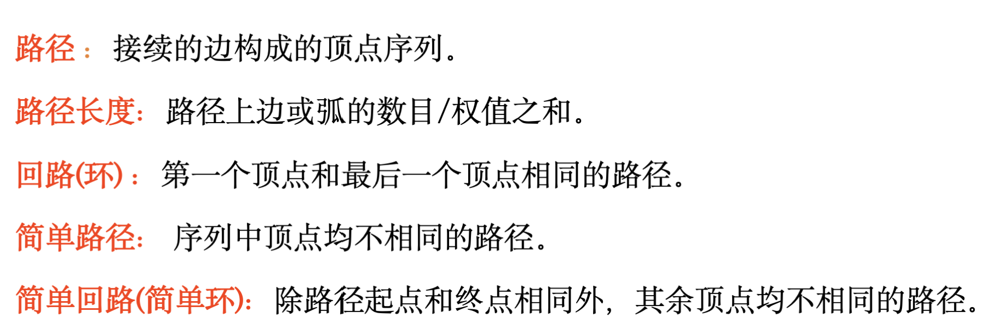
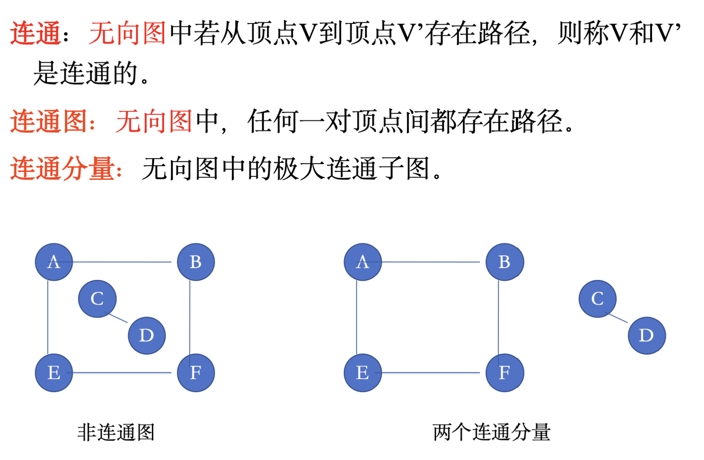
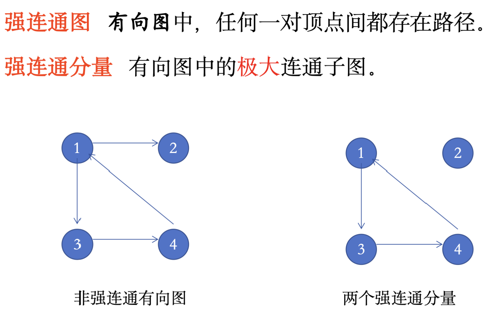
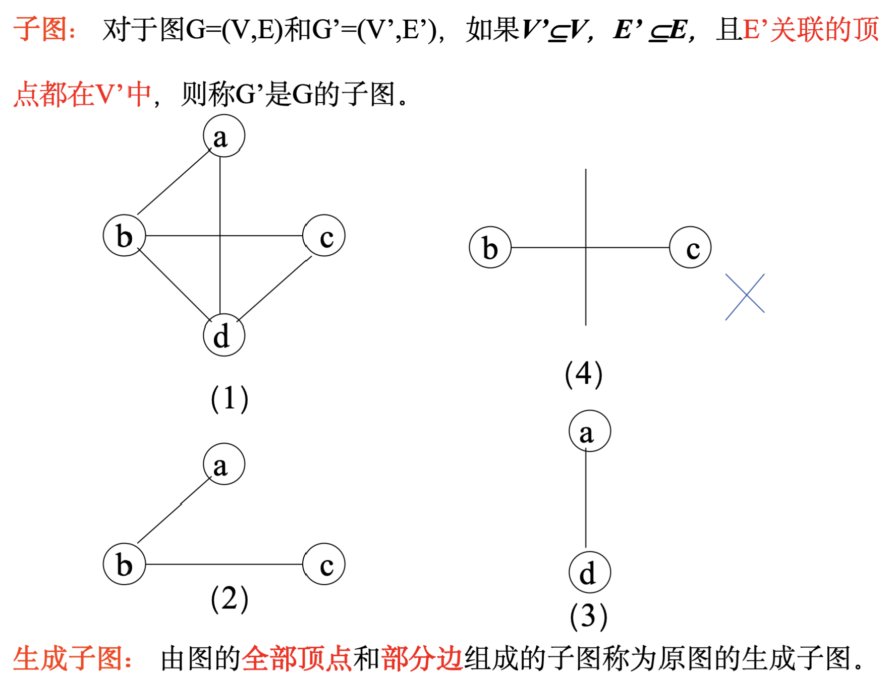
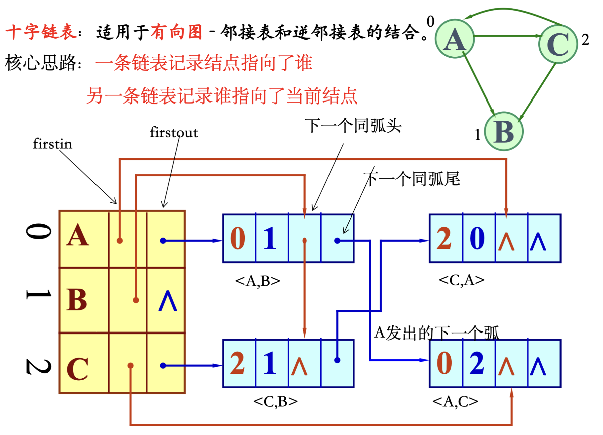
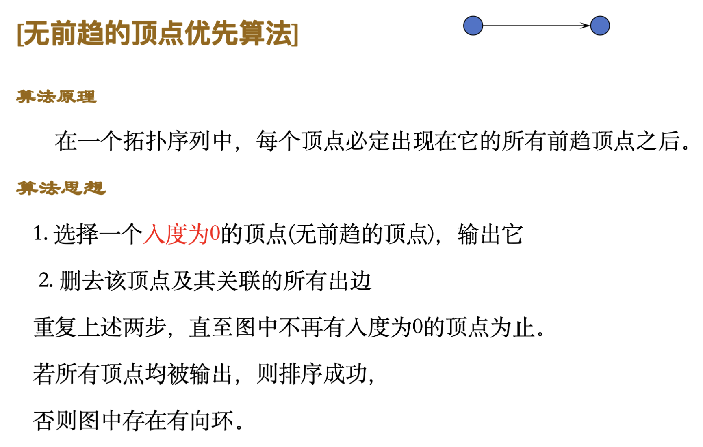
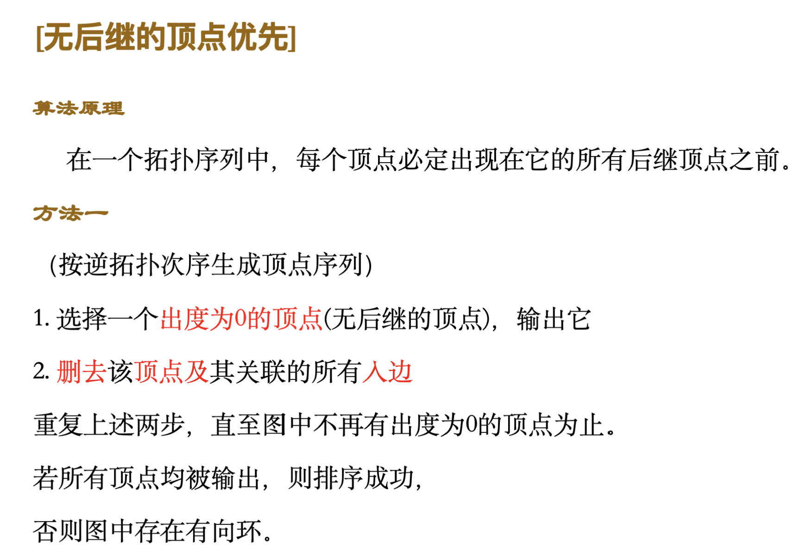
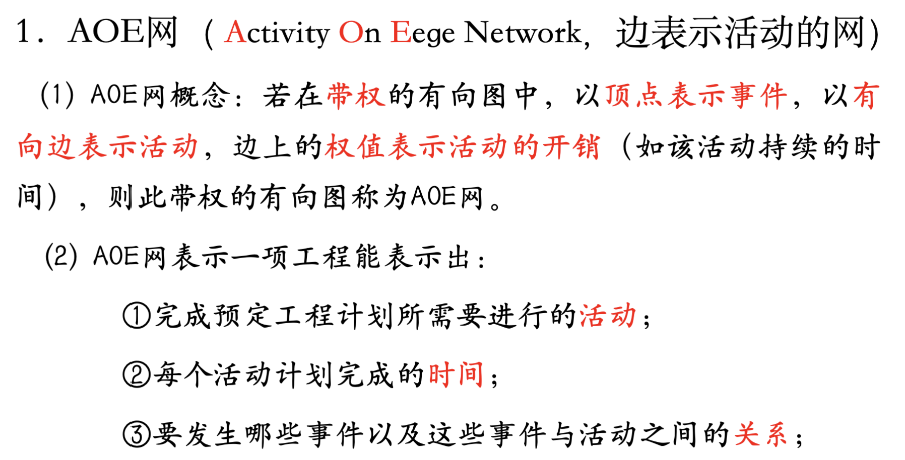
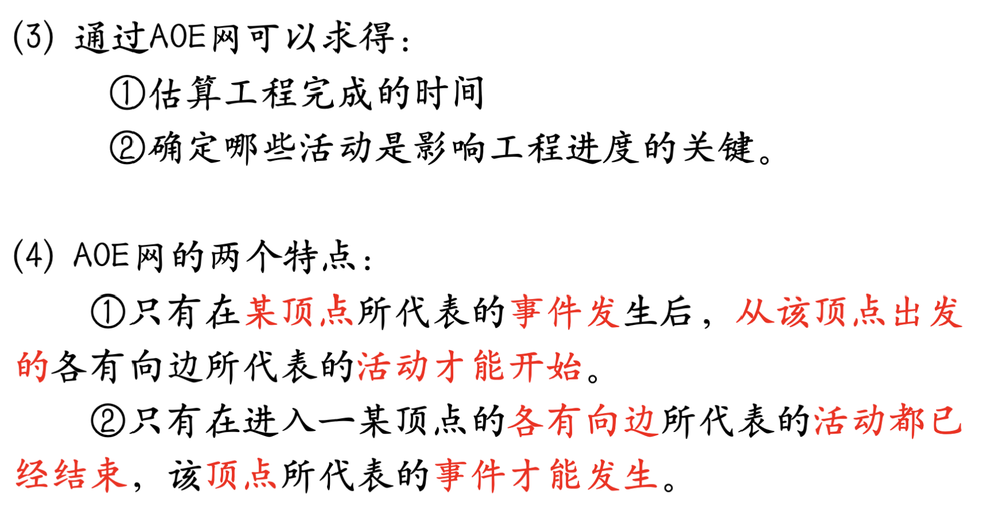
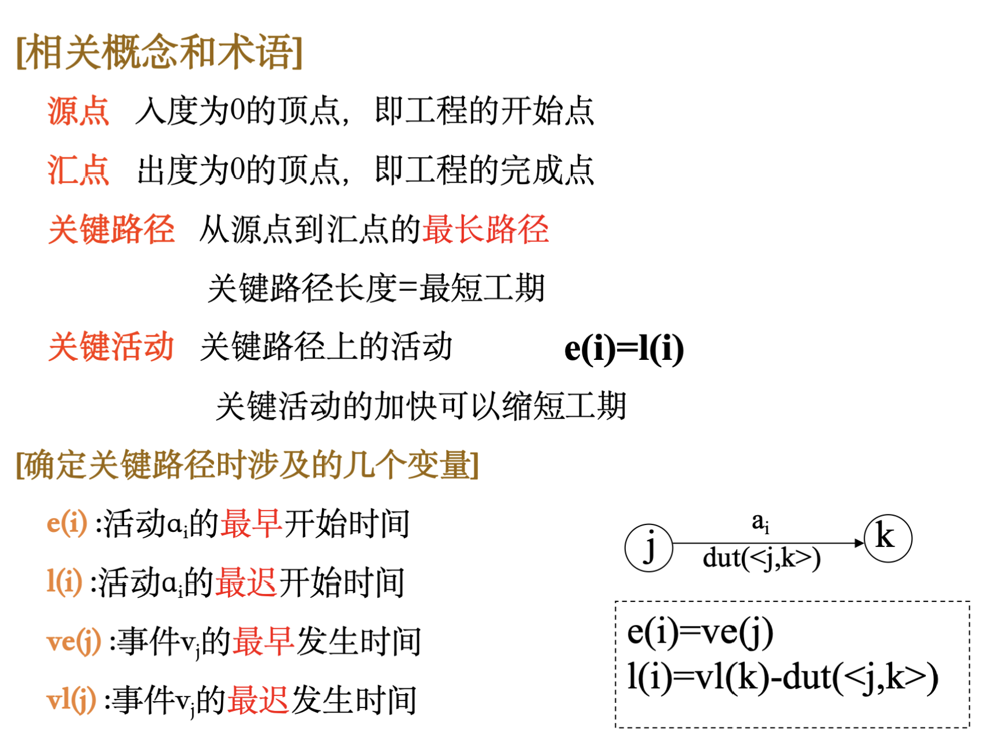

Chapter4 串
4.1 串的基本操作
Concat(&T, S1, S2); // 用T返回由S1和S2连接而成的新串两串
SubString(&Sub, S, pos, len); // 用Sub返回S字符串第pos个位置开始的长度为len的子串
StrCompare(S, T); // 两串比较S > T，返回值 > 0；S = T，返回值 = 0；S < T，返回值 < 0；
Index(S, T, pos); // 在S中第pos个位置开始后的部分找到与T相同的子串，返回第一次出现的位置，未找到则返回 0
Replace(&S, T, V); // 用V替换S中与T相等的不重叠子串
StrInsert(&S, pos, T); // 在S的第pos个位置前插入T
StrDelete(&S, pos, len); // 在S中的第pos个位置开始删除长度为len的子串4.2 串的模式匹配算法
4.2.1 简单模式匹配算法Brute Force
逐个遍历字符串的每个字母，并逐个检查从它开始的长为len个的字符是否匹配；
int Index(SString S, SString T, int pos) {
i = pos; j = 1;
while (i <= S[0] && j <= T[0]) {
if (S[i] == T[j]) {
++i;
++j;
}
// 继续比较后继字符
else {
i = i-j+2;
j = 1;
}
// 指针后退重新开始匹配
}
if (j > T[0])
return i-T[0];
else return 0;
} // Index最好情况下平均时间复杂度为\(O(m +
n)\)，最坏情况下为\(O(m *
n)\)。
#### 4.2.2 KMP算法
见KMP算法。
Chapter7 图
7.1 一些基本概念：





### 7.2 图的基本存储结构


7.3 最小生成树

### 7.4 拓扑排序
#### 7.4.1 无前驱的顶点优先算法

#### 7.4.2 无后继的顶点优先

### 7.5 关键路径
#### 7.5.1 AOE网


#### 7.5.2 关键术语
